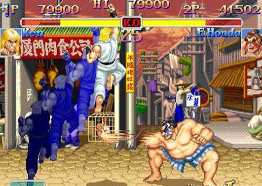
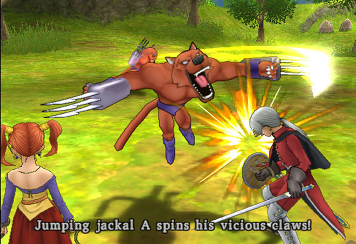

|
##. Culdcept (PS2 - NEC Interchannel - 2003)
The best game you've never played. When I saw a preview for Culdcept in a gaming magazine, I knew I had to have it even though the preview was no more than a 2 paragraphs long with only a few pictures. The magazine described Culdcept as "Magic the Gathering meets Monopoly". Knowing that both of those are very fun and addictive games I was intrigued. However, I could tell that this was going to be a niche title in every sense of the term, and I wondered if it would actually released in the states. Luckily it was released near Christmas of 2003 and I got my copy right away. Sure enough, Culdcept is a fantastically deep and engrossing card battle/board game unlike anything else out there. With over 1000 cards to collect and infinite ways to formulate winning strategies, I highly recommend it to anyone who likes collectable card games or games where strategy is necessary. Unfortunately, it is hard to find Culdcept in stores because it had a pretty limited run, but since no one played it, Culdcept doesn't seem to command a very high price right now on eBay. On a side note, Culdcept is fantastically popular in Japan, and the version we got is actually part 2 over there. They have also released a few expansions in Japan... This combined with the fact that we will never see these expansions or any sequels thanks to Culdcept's lackluster sales in the USA will totally depress you once you realize how addictive and fun this game is.
The king of early RPGs Phantasy Star holds a special place in my heart, and I consider myself lucky that the first RPG I ever played was one of the best. Released in America in 1988 (before Final Fantasy or Dragon Warrior), Phantasy Star was the first Japanese console based RPG released in the states. Phantasy Star had incredible graphics for the time with smoother first person movement in dungeons than games released 5 years later on 16 bit systems. The monsters were all animated and many took up most of the screen. There were 3 worlds to explore and a story that melded mythology and science fiction seamlessly. The characters were likable, and the quest was long and difficult, especially considering there were no hint books or other games like it at the time. Phantasy Star was revolutionary in 1988 and it still stands up to play today as a very solid and fun RPG. Plus this is the game that got me into RPGs and arguably the game that actually made me a gamer instead of just someone who played games casually. I belong to the old guard of people who wish Sega would stop screwing around with boring old Phantasy Star Online and just release a new single player Phantasy star in the vein of 1,2,and 4. I was excited for the Sega Ages remakes, but it seems like they've been axed and will never see the light of day in the states, making me think I must have been born in the wrong country. Even so, I'll love Phantasy Star forever no matter how much Sega tries to take that away from me.
##. Knights of the Old Republic (Xbox - Bioware - 2003)
Star Wars + Great RPG (Bioware)^ Freeform Gameplay = Incredible If you know anything about me a few things are apparent: I love my RPGs and I'm a Star Wars Geek. That said, Knights of the Old Republic for me is like that old commercial where someone tripped and dropped their chocolate bar in their friend's peanut butter... a perfect symbiosis of 2 incredible component parts. KOTOR is great because there is so much freedom to play the game as you please. Be a perfect, pious Jedi like me and max out your light-side powers while helping people and resisting temptations, or succumb to them and fall to the darkside... and you will be tempted repeatedly. With a great mix of Jedi and non Jedi characters to join your party having dispositions that range from good to completely neutral to dangerously dark, there are seemingly endless ways to approach situations in the game. With a plot that is better than some of the prequels and expanded universe Star Wars material, KOTOR definitely contributes greatly to the Star Wars mythology. As a testament to how great KOTOR is, I know many people who are not RPG fans or not Star Wars geeks who have been completely obsessed with the game (although if you hated both I don't know if KOTOR could change your mind...). Fun Fact - Knights of the Old Republic is the name of the original Tales of the Jedi Graphic Novel, and many of the gameplay elements mirror the comic's ideas, up to and including mentioning characters and events by name.

Shoryuken! I love Street Fighter II... It may seem hard to believe this now, but in 1991 there was not a 7-11, or arcade that did not have a Street Fighter II machine and a huge line of rabid fans like me with their quarters up in a line on the bezel waiting for our turn to school or be schooled by the competition. I played Street Fighter II constantly, spending every quarter that came near me to learn the moves and get better at it. Everyone was caught up in the hype it seemed, with EGM and GamePro devoting half of their content to moves and strategies and their covers to SFII month after month. Like everyone else When Champion Edition came out I was ecstatic to be able to actually play as the bosses. Then SFII Turbo was released and the timing of the game was perfected. Super SFII gave us 4 new challengers, new voices for the announcer and some of the characters, and sharpened the graphics considerably. Finally Super SFII Turbo bumped up the speed to an even more frenetic pace and introduced us to super moves. Each iteration brought a few new moves and minor tweaks, and while the magazines cried and railed for Capcom to just release SFIII instead of endless upgrades, I didn't mind at all. Taking one of my favorite games and continually improving it is always permissible in my book. It's 15 years later, and I'll still play Street Fighter II any chance I get. What a great game.
##. Castlevania Symphony of the Night (Playstation - Konami - 1997)
2D Gaming Perfected. I've always loved Castlevania, but even a diehard fan like me was blown away when I played Symphony of the Night. With gorgeous detailed 2D graphics that have aged far better than most of the 3D garbage on the Playstation and a soundtrack seemingly composed by the gods, this game had it all. Symphony combined action, exploration, and role playing elements to make it one of the best games of all time. With a huge castle to explore and a secret that doubled the amount of playtime in the game, Symphony of the Night will keep you busy for quite a while, and with its perfect gameplay, you'll surely play it again and again. If you really consider yourself a gamer but you have never played this game, you're out of your mind. Take a dollar and go buy yourself a clue, then get this game and play it right away. Truly one of the greatest games ever made. - Interesting Note: Sony's ridiculous anti 2D bias almost killed this game. Why is it that some of the best games on the Playstation were the very ones Sony fought so hard to kill? This ignorant bias against 2D gaming has forever changed the industry for the worse in my humble opinion.
##. The Legend of Zelda - The Wind Waker (GameCube - Nintendo - 2003)
Best mid game plot twist... Ever. Like the rest of the nay-sayers, I hated the early screenshots of this game and feared that Nintendo and Miyamoto had finally lost it. How they could go from a realistic Link as seen in Ocarina of time to this cartoony Link was beyond me. However, being the massive Zelda fan I am, I preordered the game anyway, played my free Ocarina of time preorder bonus disk, and waited to see what they had done to my favorite series. Once I got the game it only took me about 3 minutes to become its biggest supporter. The expressiveness of the characters in Windwaker is unparalleled in any game I have played before or since playing it. The control is spot on, and the combat system is better than ever. It may seem completely unrelated to all the other Zelda games, but when you learn how the vast ocean in Windwaker relates to the other games you will be blown away by the deep and well woven plot. Also, while the game looks cartoony, you dispatch the end boss in a shockingly violent fashion that will prove once and for all that this is not a game for little kids. Aside from being a bit too easy and the ocean being sometimes painfully vast, Windwaker is a worthy heir to the glorious Zelda throne.
##. Kingdom Hearts (PS2 - Square Enix - 2002)
Possibly the oddest pairing in gaming history... Kingdom Hearts is another game I had serious doubts about when I first saw it. I was at E3 and saw early promotional materials for the game at the Squaresoft booth. Combining Final Fantasy and Disney characters seemed like a horrible idea that was driven more by the desire to market 2 massive franchises to people than a desire to make a good game. I can honestly say that I had no interest in playing this game whatsoever. However, once it came out I kept reading glowing reviews of it, and my friends kept recommending it. I finally decided I'd give it a chance, albeit reluctantly. To my great surprise and pleasure, I found a wonderfully deep and detailed action RPG in the vein of the Zelda games. The story in Kingdom Hearts actually manages to make the odd pairing of Squaresoft and Disney characters make sense, the voice work and general atmosphere of the game are fantastic, and the graphics are truly some of the best I've ever seen on the PS2. If you think that you are "too cool" or "too old" to be playing a game with Goofy and Donald Duck in it, I would highly recommend that you let go of your pride and give Kingdom Hearts a try - I doubt you'll be disappointed. I know I'm eagerly awaiting the sequel to this one!
##. Tetris Attack (Super Nintendo - Nintendo - 1996)
Puzzle Perfection. Puzzle fans are an odd lot... we all tend to have our favorite puzzle games and passionately defend them. For my wife, the puzzle master, it's Dr. Mario, although she is so good she can beat me easily at any puzzle game. Personally, my favorite puzzle game has to be the splendid Tetris Attack on Super Nintendo. This game is actually a Japanese game called Panel De Pon, but here in the States it was given the name Tetris Attack... I guess they felt we wouldn't be able to figure out that the game was a puzzle game without the word Tetris in there. Anyway, in this game the tiles rise from the bottom, and with the cursor you are able to flip the location of two tiles. Lining up 3 or more tiles makes them disappear, and with a bit of practice you will soon be clearing 7 or more tiles at once. Combine this with awesome chain reactions, incredible 2 player competitions, great music, colorful graphics, and an excellent use of Yoshi and crew and you have one heck of a great game. I especially love the piranha plant that shouts "Baby!" every time it gets a combo and drops a ton of garbage blocks on its opponent. Be sure you also try out the mode where you are given a set number of moves to clear the screen by relying on combos... this mode is a real brain buster. Although this game has been re-released multiple times as Pokemon Puzzle League and Panel De Pon, I think the SNES Tetris Attack version is by far the best. Truly classic.
##. Metroid Prime (GameCube - Retro - 2002)
How games should be converted into 3D. Metroid Prime was another game that I had serious doubts about before I played it. When I learned that Nintendo had farmed development out to the then unknown Retro Studios and they were making Metroid into a first person shooter I was sure this great franchise was done for. Luckily, I was worried for nothing - Retro took the incredible gameplay of the Metroid franchise and made it even deeper and better by dropping it into a gorgeous 3D world. Metroid Prime single-handedly created the First Person Adventure genre, as it is far deeper than a typical FPS. In fact, if all games were converted to 3D this well, I wouldn't rail against the slow demise of 2D games nearly as much as I do. With haunting environments, gorgeous music and sound effects, great puzzles, and a deep and involving plot, this game is a must play for anyone who considers themselves a game fan.
Awesome I feel sorry for the kids today that have grown up on 3D games, because while there are some incredibly immersive gameplay experiences out there nowadays, this often comes at the price of dismissing 2D gaming, which is a big mistake. Actraiser was an incredible game that mixed side-scrolling action with a god sim type game where you built towns and took care of their inhabitants by protecting them from monsters and answering their prayers. The graphics were top notch even though Actraiser was a first generation SNES game, and the soundtrack by the legendary Yuzo Koshiro was one of the best to ever grace a game. Although a bit on the easy side, there are few better uses of a couple hours of your time than playing through Actraiser. I'll play this one until I die.
##. Beavis and Butthead - Virtual Stupidity (PC - Viacom New Media - 1995)
This game rocks hard... Huh huh huh... Hard. I'm not a big PC gamer to tell the truth... I'll play a PC game here or there, but by and large I lean toward console games. However, there are just some genres than the PC just seems better suited for, with point and click adventures being pretty high on that list. Virtual Stupidity is one of the best point and clicks I have ever played, and unlike the horrible B&B games on the consoles it makes excellent use of the Beavis and Butthead license. This game is so hilarious, I still remember and get a good laugh out of jokes in it even though I haven't played it in a few years. Playing virtual stupidity is literally like playing a Beavis and Butthead episode, complete with B&B ripping on videos. With deep puzzles, hilarious situations, fun mini-games, and characters like Beavis and Butthead, you'd have to be a total dillweed not to play this game.
##. Heroes of Might and Magic 2 (PC - 3D0 - 1996)
True Classic Gaming! Heroes of Might and Magic 2 is by far and away my favorite computer game of all time. A turn based strategy game with tons of different types of creatures to command castles to conquer, HOMAM 2 never seems to get old. It also has a beautiful symphonic and operatic music score and great ambient noises in the background that really pull you into the game. I love the colorful sprite based graphics in HOMAM 2 far more than the bland washed out 3D characters in HOMAM 3 and 4, and prefer the gameplay in part two compared to its successors as well. Even though this game is now a good 10 years old, I'll never stop playing it. What a great game.
##. Doom (Original Series) (PC - ID Software - 1993 - 1995)
Raising Hell Aaaah Doom, how I love these games. There is no real thought involved in playing Doom, other than finding the right colored key and then taking it to the right colored door. However, I don't play Doom when I'm in a thoughtful mood, I play Doom when I'm in the mood to blast the hell out of everything in my path. I can't think of more intense and mindlessly fun first person shooters than Doom and Doom 2. I loved everything about these games from the level design, to the gradually increasing strength of the enemies, to the soundtrack, to the sweet, sweet sound of the shotgun being cocked. At one time, Doom was the pinnacle of gaming, and poor console owners were fed half-assed version after half-assed version of it while PC gamers smugly played their perfect versions. The world has changed a lot since then, but even now, I'll play classic Doom over almost any FPS out there today.
##. Indiana Jones and the Emperor's Tomb (Xbox - LucasArts - 2003)
Whip it good When I first played this game on Xbox, I loved it immediately. I've always been a huge Indy fan, so when this game came out and finally did the series justice I was in heaven. Indy, who is voiced by a remarkably accurate voice actor controls like a dream. The fighting system is excellent, with Indy throwing punches, using guns, broken items from the environment, and of course his trademark bullwhip to put a hurtin' on those damn Nazis. This game is everything Tomb Raider ever aspired to be, only 100 times better, which comes as no surprise since Tomb Raider has always been a big Indiana Jones rip-off anyway. With great gameplay, one of the best characters of all time, and an awesome John Williams soundtrack, how could this game go wrong?
##. Sid Meier's Pirates - Live the Life (Xbox - Firaxis Games - 2005)
A pirates life for me! I played Pirates on Xbox, but it is pretty much the same on PC. You begin the game as a lowly deck hand after your family is captured by an evil pirate. After getting your own ship, you are free to do whatever you want... pursue revenge, sack cities, attack ships heavy with gold and wealth, declare your own personal war on another nationality, even romance the beautiful daughters of city governors. It may seem basic at first, but Pirates is one of those games that makes you keep saying "I'll just do one more thing" until the next thing you know it's morning and you haven't even been to bed yet. Few games have consumed me as thoroughly as I was when I was playing Pirates, and for inspiring that kind of obsession, Pirates definitely deserves a place on this list.
100. Unreal Tournament (LAN Play) (PC - GT Interactive - 2000)
Killing Spree!!! Unreal Tournament was an odd game... while it bored the heck out of me in its single player mode, when my coworkers and I would get about 20 people playing it on the company LAN, I went berserk. Never before had I experienced such a frenetic game... explosions echoed all around me while the announcer would boom out things like "Head Shot" "Rampage" and "Killing Spree". The graphics were exceptionally well polished, and the weapons were well thought out with great primary and secondary attacks. With tons of options to tweak the gameplay and a fantastic capture the flag mode, we played UT for months and it never lost its thrill. Man I loved playing this game. -Fun Story: One day I was playing this on the LAN at my work while an important client was visiting us. It was after hours, so I wasn't too concerned about the client hearing us playing. I turned a corner in the game and came face to face with another character so I blasted his ass to smithereens. Then I found him a few minutes later and killed him again. I began talking a ton of smack as I kept easily killing this guy, never realizing that he was the client, who was a big game fan as well. Luckily he took it well and I didn't endanger our contract with my big mouth... I'm normally a calm guy, but Unreal Tournament seemed to bring out an animal side of me when I played it. What fun!
A fantastically deep and wonderful game that only like 10 people ever played... When people talk about great games, there are always a few games that you can be pretty sure made the cut. However, if you are lucky you may learn about a hidden gem, a game that was great but for some reason was overlooked by gamers. Starflight for Sega Genesis is one of these overlooked treasures of gaming. In Starflight you start out as captain of a starship and need to outfit your vessel, train a crew, and explore the galaxy. There are over 900 planets in multiple solar systems and many alien races that range from friendly to downright aggressive. Starflight is completely open ended, so you are free to spend your time doing whatever you want. You can explore and mine planets, search for worlds suitable for human colonization, pursue diplomatic relations with other races, or attack other vessels and salvage their wreckage like a space pirate. During the course of play you will discover ancient artifacts and uncover a dark mystery that threatens all life in the universe. Games like Starflight are rare and precious, and I would recommend it to anyone. If ever a game deserved a modern sequel, Starflight is definitely it. What an awesome game.
##. Dragon Quest I & II (SNES - Enix - 1993)
2 classic RPGs in one excellent remake: No official US release Ok, here's the case for emulation... Dragon Warrior was a great (although very basic) RPG on the original Nintendo. The series did ok here in the states, but in Japan it enjoyed legendary popularity. It was only natural then that the earlier versions of the series would be re-released on the Super Nintendo with their graphics, sounds, and user interface upgraded. To sweeten the deal, Enix even combined the first game with Dragon Quest (the name of the series in Japan) II for the re-release. However, we never got a translated version of the game here in the states because for some reason people here were not that into RPGs in the early 90's. Luckily, thanks to hardcore fans, two perfectly translated roms of this game were made, one with the original Japanese names and one with the names that were used in the American version of Dragon Warrior. While these games were fun on the NES, the SNES version with its superior graphics and sounds is truly the way they were meant to be played. If you are a fan of classic RPGs, give this game a try and enjoy the origin of one of the best RPG series ever. Oh, and Enix, don't even think of sweating me for emulating these... if you'd just release them on the GBA I'd be the first in line to give you my money. (Hardheaded jerks).
##. Star Wars Arcade (Arcade - Atari - 1983)
I have a bad feeling about this... Here in Denver there used to be a sweet place called Celebrity Sports Center that had bowling, A pool with 3 waterslides, and an awesome multi-level arcade. Now, if you were to be looking for me in that awesome arcade in my younger days, you wouldn't have to look much further than the Star Wars Arcade machine. The vector graphics, while simple, were very nice and did the ships and other objects in the game justice, the control was perfect thanks to a cool flight yoke, the gameplay was pretty varied for the time period, and the music and voice samples from the movie really set the mood. You started out in space destroying waves of TIE Fighters as Luke Skywalker in your X-Wing. After wiping out the TIEs, you flew down to the nearby Death Star and attempted to destroy it while dodging laser fire in the infamous equatorial trench. If you destroyed the Death Star, you would fly back into space to begin another, more difficult round with more aggressive TIEs and even Lord Vader himself gunning for you. Even though it is over 20 years old now, this game is still a blast to play, which is a true testament to its greatness. - Secret Tip: When you are in the Death Star trench, if you do not fire any shots except the one into the thermal exhaust port to destroy the Death Star you will get a 5000 point bonus for "Using the Force". This bonus even increases incrementally up to 100,000 points as you go to higher levels, if you can survive that is. How cool is that???
##. Streets of Rage 2 (Sega Genesis - Sega - 1993) (20)
One of the finest Genesis games ever made I'm not the biggest fan of the Beat-em-up genre that was popular in the 90's as the games were all pretty derivative of each other. Imagine my surprise then when I played Streets of Rage 2 at a friends house and was blown away by how good it was. With huge stages, tons of different types of enemies, excellent play control, memorable characters, fantastic graphics, and one of the best soundtracks to ever grace the Genesis (by the incredible Yuzo Koshiro) how could you go wrong? This is the game to pull out when you are making your case for how great the Genesis was... truly a masterpiece of game development and one of the best games in its genre ever created.
##. Pilotwings (SNES - Nintendo - 1991)
Pilotwings instructors have no patience for amateurs like you... I bought Pilotwings one day when I was a teenager with the meager earnings from my job. Looking back, I'm sure there were games with flashier cover art or cooler sounding concepts, yet for some reason I picked this game. That alone proves to me that I must have been the smartest damn teenager in the world. See, for a game that was released with little hype and had very sedate advertising, Pilotwings turned out to be one of the best games on the Super Nintendo. In Pilotwings you got to fly all manner of machines from biplanes to hang gliders, parachutes to rocket packs. there were numerous objectives to fulfill and quirky flight instructors to annoy or astound. Pilotwings also made excellent use of the Mode 7 scaling and rotation effects on the SNES. This game is still fun to play to this very day, and I personally think the original is far better than the N64 sequel that came out years later. Highly recommended!
##. Lego Star Wars (XBOX - Traveler's Tales - 2005)
Too cool for words... I managed a one person game store for years, and in that time had a lot of parents wanting to know what games were good for kids. Many of these parents would ignore my advice and instead pick some random Lego game, even though they were usually crap. Knowing this track record of crappy games, I was wary when I heard about the Lego Star Wars video game. Luckily, my worries were for nothing. Lego Star Wars is a great game that covers all 3 of the prequel movies. There are tons of characters to unlock and things to do in this game and there is also a fantastic drop in/drop out anytime 2 player feature. Lego Star Wars was a bit easy, but it is so charming that this is easily forgivable. I found it to be the perfect game to play with my daughter, and would highly recommend it to anyone with kids or who is just a Star Wars geek like me. My only complaint is that in their rush to release Lego Star Wars near the theatrical release of Episode III to capitalize on the inevitable marketing blitz that would follow, Traveler's Tales did not wait for the Episode III soundtrack to be finalized so all of the Episode III levels have music from other Star Wars movies in them. Not an issue for the typical person I'm sure, but hell for geeks like me. Even so this is such a great game, I can forgive them and that's saying a lot coming from a Star Wars geek like me.
##. Snatcher (Sega CD - Konami - 1994)
Believe the hype... Snatcher rules. Snatcher is one of those games that every publication and person who has played it seems to rave on and on about. If you've never played Snatcher, you may wonder if it is really that good... Well I'm here to tell you it's probably better than what you've been told. Hideo Kojima is at his finest in Snatcher, weaving a tale of betrayal and intrigue unlike anything that had been released up to this point. Borrowing heavily from Blade Runner, this cyberpunk thriller told the convoluted story of Gillian Seed, a JUNKER who was out to discover the origins of the mysterious Snatchers. These evil robots killed their prey and then assumed their appearance, so you never know who is a person you can trust and who is really a Snatcher waiting to attack you without warning. This is a game worth buying a Sega CD and the Justifier gun peripheral just to play. I just can't recommend Snatcher highly enough. Snatcher is definitely a must play for anyone who considers themselves a gamer.
##. Shenmue (Dreamcast - Sega (AM2) - 2000)
Mess with Ryo's father? That's your last mistake sucker.... Shenmue was one of the most expensive games ever created in terms of its production budget, and was an ambitious project to say the least. Yu Suzuki was determined to create a game that mirrored reality down to the smallest detail, and he crafted an epic plot that was originally to span fifteen chapters. While it seems that Sega has abandoned the idea of releasing all fifteen of these chapters, they did give us Shenmue. This was truly one of the finest games on the Dreamcast. Every character in the game was unique - no cheesy palate swaps or repeated voices here. The smallest details were included, including an option to play the game using the real weather conditions in 1986 Japan. As a big fan of this game, I'll be the first to admit that Shenmue is not for everyone - Those who don't have the patience to actually wait for busses in game or get a job in game to earn money or deal with any of the numerous other tiny details in Shenmue need not apply. Nevertheless, if you don't mind a game that plays like real life (with all the highs and lows that entails), Shenmue is the game for you.
##. Pocky and Rocky (SNES - Natsume - 1992)
Don't let the cute characters fool you, this is a solid and tough shooter. This quirky little game starred an adorable Japanese girl who threw cards at her foes and a cute little raccoon who threw leaves and could deflect shots with his tail. Sounds too cute and silly to be any fun, right? Well you'd be surprised at how well executed this game actually was. This is a solid shooter with tons of enemies, good power-ups, screen clearing bombs, the ability to deflect shots, and even the ability to use your teammate as a weapon, sending them careening around the screen laying waste to your enemies (in the excellent 2 player mode). With a very Japanese feel and a great soundtrack, Pocky and Rocky was a real gem on the Super Nintendo and is well worth playing even today.
##. Super Metroid (SNES - Nintendo - 1994)
One of the crown jewels of gaming. Play it now. Honestly I didn't care much for the first Metroid. This is largely because the first Metroid game I ever played was the phenomenal Super Metroid on the Super Nintendo, and after playing Super Metroid, it was impossible for me to go back and appreciate the original. See, Super Metroid is everything the original was multiplied by a factor of 100. This game was honestly one of the best games of the 16 bit era, and is still one of the best games ever made. With a huge area to explore, spectacular power-ups, great enemy variety, tons of secrets, stellar graphics, and an incredible soundtrack, Super Metroid got everything right. If you haven't played this game, you are out of your mind. Super Metroid is the definition of a true classic game.
##. Katamari Damacy (PS2 - Namco - 2004)
Possibly the most original game I have ever played. Awesome. Katamari Damacy is such an odd game that it is impossible to classify by any current gaming definition. You play as a tiny prince who's father, the King of all Cosmos destroyed all of the stars in the sky in a drunken fit. Now your irresponsible and just plain bizarre father has tasked you with rebuilding the cosmos. How? By going down to Earth and rolling up everything you encounter into your Katamari, a sticky ball that absorbs everything it touches that is smaller than it. The gameplay mechanics are very similar to rolling around a snowball and making it bigger and bigger. With awesome Japanese music, incredibly bizarre interludes, and simple yet addictive gameplay, Katamari Damacy is one of the most unique games to ever come along. Namco deserves a lot of credit for taking a chance and releasing this game in the States, and I'm glad its done so well here. Hopefully this will encourage other companies to release something besides endless sequels and cookie cutter games. Katamari Damacy is a must play... it will roll you up into its life - you'll roll up to be a single star in the sky.
##. X-Men Legends, (Xbox - Activision - 2004)
X-men - Check, Action RPG - Check, Totally Awesome - Check! X-men Legends is a game that I think was specifically created for me. With 15 different X-men, each with their own unique strengths and weaknesses, tons of items to collect, a great RPG plot, and 4 player drop in/drop out gameplay, X-men Legends had it all. For the uninitiated, I'd compare this game to Gauntlet with the X-men and more RPG elements like stat building and defensive items. I love this game! The only thing I'd change would be to add a "New Game +" option like Chrono Trigger had so I could play the game again with my fully powered up mutants from the outset and really lay waste to my enemies. Even without this option though, X-men Legends is by far and away the best X-men game ever, and one of the best action RPGs I have played as well. A combination like that will always have a place on this list in my book.
##. Teenage Mutant Ninja Turtles (Arcade - Konami - 1989)
4 player arcade madness! Cowabunga! Teenage Mutant Ninja Turtles were HUGE in the late 80's and early 90's... so huge it is hard to explain how popular they were to people who did not experience the fad in its heyday. Like most popular franchises, someone got the idea to branch off and create a TMNT video game. Luckily for us, Konami was on the ball and instead of releasing some crappy game that relied on name recognition more than gameplay they released this gem of a game. Four players could play TMNT simulatneously at their local arcade, guiding the Turtles through colorful stages toward their inevitable confrontation with Krang and Shredder. The graphics were gorgeous, playing TMNT was like playing through an episode of the cartoon. All of the sound effects and voices were perfect as well and the music was spectacular and is memorable to this day. I loved playing as Donatello, and spent countless quarters on this awesome game at Celebrity Sports Center, home of Denver's best arcade at the time. I swear by all that is holy that someday I will own a 4 player TMNT cabinet!
##. Star Control II (3D0) - Accolade - 1993) (30)
A Sci-Fi Masterpiece. Star Control II is a phenomonal game that puts you in the middle of one of the best science fiction stories I have ever experienced. You were born and raised on a colony that had lost contact with Earth and had no means of getting back home. After discovering an ancient automated factory that was created to build starships, the colonists expend all of their resources to create one massive ship. You are the captain of this advanced vessel, and upon returning to Earth you discover that it has become a slave world of the creul Ur-Quan Heirarchy. These vicious creatures feel that it is their destiny to either enslave or exterminate all other life in the universe. During the course of your journey for humanity's freedom you will encounter many different alien races, each with their own cultures and distinct personalities. You'll explore the universe and uncover incredible plot twists and turns as you move toward humanity's salvation or destruction. Amazingly, this game was made almost entirely by only 2 incredibly talented people. Many people and publications have praised this game as one of the best of all time and they are right. A must play.
##. Lunar - The Silver Star Story Complete (Playstation - Working Designs - 2002)
The most charming RPG I've ever played. When I first played this game on Xbox, I loved it immediately. I've always been a huge Indy fan, so when this game came out and finally did the series justice I was in heaven. Indy, who is voiced by a remarkably accurate voice actor controls like a dream. The fighting system is excellent, with Indy throwing punches, using guns, broken items from the environment, and of course his trademark bullwhip to put a hurtin' on those damn Nazis. This game is everything Tomb Raider ever aspired to be, only 100 times better, which comes as no surprise since Tomb Raider has always been a big Indiana Jones rip-off anyway. With great gameplay, one of the best characters of all time, and an awesome John Williams soundtrack, how could this game go wrong?
##. Sonic CD (Sega CD - Sega - 1993)
Sonic at his best. When I first played this game on Xbox, I loved it immediately. I've always been a huge Indy fan, so when this game came out and finally did the series justice I was in heaven. Indy, who is voiced by a remarkably accurate voice actor controls like a dream. The fighting system is excellent, with Indy throwing punches, using guns, broken items from the environment, and of course his trademark bullwhip to put a hurtin' on those damn Nazis. This game is everything Tomb Raider ever aspired to be, only 100 times better, which comes as no surprise since Tomb Raider has always been a big Indiana Jones rip-off anyway. With great gameplay, one of the best characters of all time, and an awesome John Williams soundtrack, how could this game go wrong?
##. Marvel vs Capcom 2 (Dreamcast - Capcom - 1992)
Fast, frenetic, flashy and fantastic! No game lends itself to alliteration
better than MVC 2! When I first played this game on Xbox, I loved it immediately. I've always been a huge Indy fan, so when this game came out and finally did the series justice I was in heaven. Indy, who is voiced by a remarkably accurate voice actor controls like a dream. The fighting system is excellent, with Indy throwing punches, using guns, broken items from the environment, and of course his trademark bullwhip to put a hurtin' on those damn Nazis. This game is everything Tomb Raider ever aspired to be, only 100 times better, which comes as no surprise since Tomb Raider has always been a big Indiana Jones rip-off anyway. With great gameplay, one of the best characters of all time, and an awesome John Williams soundtrack, how could this game go wrong?
##. Suikoden (Playstation - Konami - 1996)
Don't let the cute characters fool you, this is a solid and tough shooter. When I first played this game on Xbox, I loved it immediately. I've always been a huge Indy fan, so when this game came out and finally did the series justice I was in heaven. Indy, who is voiced by a remarkably accurate voice actor controls like a dream. The fighting system is excellent, with Indy throwing punches, using guns, broken items from the environment, and of course his trademark bullwhip to put a hurtin' on those damn Nazis. This game is everything Tomb Raider ever aspired to be, only 100 times better, which comes as no surprise since Tomb Raider has always been a big Indiana Jones rip-off anyway. With great gameplay, one of the best characters of all time, and an awesome John Williams soundtrack, how could this game go wrong?
##. Resident Evil (Gamecube - Capcom - 2002)
Survival horror at its best. When I first played this game on Xbox, I loved it immediately. I've always been a huge Indy fan, so when this game came out and finally did the series justice I was in heaven. Indy, who is voiced by a remarkably accurate voice actor controls like a dream. The fighting system is excellent, with Indy throwing punches, using guns, broken items from the environment, and of course his trademark bullwhip to put a hurtin' on those damn Nazis. This game is everything Tomb Raider ever aspired to be, only 100 times better, which comes as no surprise since Tomb Raider has always been a big Indiana Jones rip-off anyway. With great gameplay, one of the best characters of all time, and an awesome John Williams soundtrack, how could this game go wrong?
##. Final Fantasy Tactics (Playstation - Squaresoft - 1998)
Deep strategy, dark storyline, incredible gameplay - FF Tactics has it all. When I first played this game on Xbox, I loved it immediately. I've always been a huge Indy fan, so when this game came out and finally did the series justice I was in heaven. Indy, who is voiced by a remarkably accurate voice actor controls like a dream. The fighting system is excellent, with Indy throwing punches, using guns, broken items from the environment, and of course his trademark bullwhip to put a hurtin' on those damn Nazis. This game is everything Tomb Raider ever aspired to be, only 100 times better, which comes as no surprise since Tomb Raider has always been a big Indiana Jones rip-off anyway. With great gameplay, one of the best characters of all time, and an awesome John Williams soundtrack, how could this game go wrong?
##. WarioWare Inc. Mega MicroGame$ (GBA - Nintendo - 2003)
Bizarre and crazy fun in bite sized portions. When I first played this game on Xbox, I loved it immediately. I've always been a huge Indy fan, so when this game came out and finally did the series justice I was in heaven. Indy, who is voiced by a remarkably accurate voice actor controls like a dream. The fighting system is excellent, with Indy throwing punches, using guns, broken items from the environment, and of course his trademark bullwhip to put a hurtin' on those damn Nazis. This game is everything Tomb Raider ever aspired to be, only 100 times better, which comes as no surprise since Tomb Raider has always been a big Indiana Jones rip-off anyway. With great gameplay, one of the best characters of all time, and an awesome John Williams soundtrack, how could this game go wrong?
##. Kirby Nightmare in Dreamland (GBA - Hal Labratories - 2002)
Platforming done right on the GBA. When I first played this game on Xbox, I loved it immediately. I've always been a huge Indy fan, so when this game came out and finally did the series justice I was in heaven. Indy, who is voiced by a remarkably accurate voice actor controls like a dream. The fighting system is excellent, with Indy throwing punches, using guns, broken items from the environment, and of course his trademark bullwhip to put a hurtin' on those damn Nazis. This game is everything Tomb Raider ever aspired to be, only 100 times better, which comes as no surprise since Tomb Raider has always been a big Indiana Jones rip-off anyway. With great gameplay, one of the best characters of all time, and an awesome John Williams soundtrack, how could this game go wrong?
##. Soul Blazer (SNES - Enix - 1992)
Completely unique and completely excellent. When I first played this game on Xbox, I loved it immediately. I've always been a huge Indy fan, so when this game came out and finally did the series justice I was in heaven. Indy, who is voiced by a remarkably accurate voice actor controls like a dream. The fighting system is excellent, with Indy throwing punches, using guns, broken items from the environment, and of course his trademark bullwhip to put a hurtin' on those damn Nazis. This game is everything Tomb Raider ever aspired to be, only 100 times better, which comes as no surprise since Tomb Raider has always been a big Indiana Jones rip-off anyway. With great gameplay, one of the best characters of all time, and an awesome John Williams soundtrack, how could this game go wrong?
##. Super Smash Brothers Melee (GameCube - Hal Labratories - 2001) (40)
Deceptively deep and incredibly fun. When I first played this game on Xbox, I loved it immediately. I've always been a huge Indy fan, so when this game came out and finally did the series justice I was in heaven. Indy, who is voiced by a remarkably accurate voice actor controls like a dream. The fighting system is excellent, with Indy throwing punches, using guns, broken items from the environment, and of course his trademark bullwhip to put a hurtin' on those damn Nazis. This game is everything Tomb Raider ever aspired to be, only 100 times better, which comes as no surprise since Tomb Raider has always been a big Indiana Jones rip-off anyway. With great gameplay, one of the best characters of all time, and an awesome John Williams soundtrack, how could this game go wrong?
##. Final Fantasy IV (SNES - Squaresoft - 1991)
RPG Gold. When I first played this game on Xbox, I loved it immediately. I've always been a huge Indy fan, so when this game came out and finally did the series justice I was in heaven. Indy, who is voiced by a remarkably accurate voice actor controls like a dream. The fighting system is excellent, with Indy throwing punches, using guns, broken items from the environment, and of course his trademark bullwhip to put a hurtin' on those damn Nazis. This game is everything Tomb Raider ever aspired to be, only 100 times better, which comes as no surprise since Tomb Raider has always been a big Indiana Jones rip-off anyway. With great gameplay, one of the best characters of all time, and an awesome John Williams soundtrack, how could this game go wrong?
##. Final Fantasy VI (SNES - Squaresoft - 1994)
Squaresoft's finest hour. When I first played this game on Xbox, I loved it immediately. I've always been a huge Indy fan, so when this game came out and finally did the series justice I was in heaven. Indy, who is voiced by a remarkably accurate voice actor controls like a dream. The fighting system is excellent, with Indy throwing punches, using guns, broken items from the environment, and of course his trademark bullwhip to put a hurtin' on those damn Nazis. This game is everything Tomb Raider ever aspired to be, only 100 times better, which comes as no surprise since Tomb Raider has always been a big Indiana Jones rip-off anyway. With great gameplay, one of the best characters of all time, and an awesome John Williams soundtrack, how could this game go wrong?
##. Chrono Trigger (SNES - Squaresoft - 1995)
A dream game from a dream team. RPG perfection. When I first played this game on Xbox, I loved it immediately. I've always been a huge Indy fan, so when this game came out and finally did the series justice I was in heaven. Indy, who is voiced by a remarkably accurate voice actor controls like a dream. The fighting system is excellent, with Indy throwing punches, using guns, broken items from the environment, and of course his trademark bullwhip to put a hurtin' on those damn Nazis. This game is everything Tomb Raider ever aspired to be, only 100 times better, which comes as no surprise since Tomb Raider has always been a big Indiana Jones rip-off anyway. With great gameplay, one of the best characters of all time, and an awesome John Williams soundtrack, how could this game go wrong?
##. Y's Book 1 & 2 (Turbo Grafix CD - Falcom - 1989)
Don't let the cute characters fool you, this is a solid and tough shooter. When I first played this game on Xbox, I loved it immediately. I've always been a huge Indy fan, so when this game came out and finally did the series justice I was in heaven. Indy, who is voiced by a remarkably accurate voice actor controls like a dream. The fighting system is excellent, with Indy throwing punches, using guns, broken items from the environment, and of course his trademark bullwhip to put a hurtin' on those damn Nazis. This game is everything Tomb Raider ever aspired to be, only 100 times better, which comes as no surprise since Tomb Raider has always been a big Indiana Jones rip-off anyway. With great gameplay, one of the best characters of all time, and an awesome John Williams soundtrack, how could this game go wrong?
##. Phantasy Star IV (Sega Genesis - Sega - 1993)
Phantasy Star perfected. When I first played this game on Xbox, I loved it immediately. I've always been a huge Indy fan, so when this game came out and finally did the series justice I was in heaven. Indy, who is voiced by a remarkably accurate voice actor controls like a dream. The fighting system is excellent, with Indy throwing punches, using guns, broken items from the environment, and of course his trademark bullwhip to put a hurtin' on those damn Nazis. This game is everything Tomb Raider ever aspired to be, only 100 times better, which comes as no surprise since Tomb Raider has always been a big Indiana Jones rip-off anyway. With great gameplay, one of the best characters of all time, and an awesome John Williams soundtrack, how could this game go wrong?
##. Road Rash (Sega Genesis - Electronic Arts - 1992)
Don't let the cute characters fool you, this is a solid and tough shooter. When I first played this game on Xbox, I loved it immediately. I've always been a huge Indy fan, so when this game came out and finally did the series justice I was in heaven. Indy, who is voiced by a remarkably accurate voice actor controls like a dream. The fighting system is excellent, with Indy throwing punches, using guns, broken items from the environment, and of course his trademark bullwhip to put a hurtin' on those damn Nazis. This game is everything Tomb Raider ever aspired to be, only 100 times better, which comes as no surprise since Tomb Raider has always been a big Indiana Jones rip-off anyway. With great gameplay, one of the best characters of all time, and an awesome John Williams soundtrack, how could this game go wrong?
##. Space Harrier (Sega Master System - Sega - 1986)
Don't let the cute characters fool you, this is a solid and tough shooter. When I first played this game on Xbox, I loved it immediately. I've always been a huge Indy fan, so when this game came out and finally did the series justice I was in heaven. Indy, who is voiced by a remarkably accurate voice actor controls like a dream. The fighting system is excellent, with Indy throwing punches, using guns, broken items from the environment, and of course his trademark bullwhip to put a hurtin' on those damn Nazis. This game is everything Tomb Raider ever aspired to be, only 100 times better, which comes as no surprise since Tomb Raider has always been a big Indiana Jones rip-off anyway. With great gameplay, one of the best characters of all time, and an awesome John Williams soundtrack, how could this game go wrong?
##. Shining Force CD (Sega CD - Sega - 1994)
Don't let the cute characters fool you, this is a solid and tough shooter. When I first played this game on Xbox, I loved it immediately. I've always been a huge Indy fan, so when this game came out and finally did the series justice I was in heaven. Indy, who is voiced by a remarkably accurate voice actor controls like a dream. The fighting system is excellent, with Indy throwing punches, using guns, broken items from the environment, and of course his trademark bullwhip to put a hurtin' on those damn Nazis. This game is everything Tomb Raider ever aspired to be, only 100 times better, which comes as no surprise since Tomb Raider has always been a big Indiana Jones rip-off anyway. With great gameplay, one of the best characters of all time, and an awesome John Williams soundtrack, how could this game go wrong?
##. Super Mario RPG (SNES - Squaresoft - 1996)
Don't let the cute characters fool you, this is a solid and tough shooter. When I first played this game on Xbox, I loved it immediately. I've always been a huge Indy fan, so when this game came out and finally did the series justice I was in heaven. Indy, who is voiced by a remarkably accurate voice actor controls like a dream. The fighting system is excellent, with Indy throwing punches, using guns, broken items from the environment, and of course his trademark bullwhip to put a hurtin' on those damn Nazis. This game is everything Tomb Raider ever aspired to be, only 100 times better, which comes as no surprise since Tomb Raider has always been a big Indiana Jones rip-off anyway. With great gameplay, one of the best characters of all time, and an awesome John Williams soundtrack, how could this game go wrong?
##. Alundra (Playstation - Working Designs - 1997) (50)
Don't let the cute characters fool you, this is a solid and tough shooter. When I first played this game on Xbox, I loved it immediately. I've always been a huge Indy fan, so when this game came out and finally did the series justice I was in heaven. Indy, who is voiced by a remarkably accurate voice actor controls like a dream. The fighting system is excellent, with Indy throwing punches, using guns, broken items from the environment, and of course his trademark bullwhip to put a hurtin' on those damn Nazis. This game is everything Tomb Raider ever aspired to be, only 100 times better, which comes as no surprise since Tomb Raider has always been a big Indiana Jones rip-off anyway. With great gameplay, one of the best characters of all time, and an awesome John Williams soundtrack, how could this game go wrong?
##. Jedi Knight - Jedi Outcast (XBOX - Lucasarts - 2002)
Don't let the cute characters fool you, this is a solid and tough shooter. When I first played this game on Xbox, I loved it immediately. I've always been a huge Indy fan, so when this game came out and finally did the series justice I was in heaven. Indy, who is voiced by a remarkably accurate voice actor controls like a dream. The fighting system is excellent, with Indy throwing punches, using guns, broken items from the environment, and of course his trademark bullwhip to put a hurtin' on those damn Nazis. This game is everything Tomb Raider ever aspired to be, only 100 times better, which comes as no surprise since Tomb Raider has always been a big Indiana Jones rip-off anyway. With great gameplay, one of the best characters of all time, and an awesome John Williams soundtrack, how could this game go wrong?
##. Gradius V (PS2 - Konami - 2004)
Don't let the cute characters fool you, this is a solid and tough shooter. When I first played this game on Xbox, I loved it immediately. I've always been a huge Indy fan, so when this game came out and finally did the series justice I was in heaven. Indy, who is voiced by a remarkably accurate voice actor controls like a dream. The fighting system is excellent, with Indy throwing punches, using guns, broken items from the environment, and of course his trademark bullwhip to put a hurtin' on those damn Nazis. This game is everything Tomb Raider ever aspired to be, only 100 times better, which comes as no surprise since Tomb Raider has always been a big Indiana Jones rip-off anyway. With great gameplay, one of the best characters of all time, and an awesome John Williams soundtrack, how could this game go wrong?
##. Dragon Quest VIII (PS2 - Square Enix - 2005)  The perfect evolution of classic RPG gameplay. When I first played this game on Xbox, I loved it immediately. I've always been a huge Indy fan, so when this game came out and finally did the series justice I was in heaven. Indy, who is voiced by a remarkably accurate voice actor controls like a dream. The fighting system is excellent, with Indy throwing punches, using guns, broken items from the environment, and of course his trademark bullwhip to put a hurtin' on those damn Nazis. This game is everything Tomb Raider ever aspired to be, only 100 times better, which comes as no surprise since Tomb Raider has always been a big Indiana Jones rip-off anyway. With great gameplay, one of the best characters of all time, and an awesome John Williams soundtrack, how could this game go wrong?
##. Strider (Arcade - Capcom - 1989)
A visually arresting classic that plays like a dream. When I first played this game on Xbox, I loved it immediately. I've always been a huge Indy fan, so when this game came out and finally did the series justice I was in heaven. Indy, who is voiced by a remarkably accurate voice actor controls like a dream. The fighting system is excellent, with Indy throwing punches, using guns, broken items from the environment, and of course his trademark bullwhip to put a hurtin' on those damn Nazis. This game is everything Tomb Raider ever aspired to be, only 100 times better, which comes as no surprise since Tomb Raider has always been a big Indiana Jones rip-off anyway. With great gameplay, one of the best characters of all time, and an awesome John Williams soundtrack, how could this game go wrong?
##. Pikmin (GameCube - Nintendo - 2001)
Don't let the cute characters fool you, this is a solid and tough shooter. When I first played this game on Xbox, I loved it immediately. I've always been a huge Indy fan, so when this game came out and finally did the series justice I was in heaven. Indy, who is voiced by a remarkably accurate voice actor controls like a dream. The fighting system is excellent, with Indy throwing punches, using guns, broken items from the environment, and of course his trademark bullwhip to put a hurtin' on those damn Nazis. This game is everything Tomb Raider ever aspired to be, only 100 times better, which comes as no surprise since Tomb Raider has always been a big Indiana Jones rip-off anyway. With great gameplay, one of the best characters of all time, and an awesome John Williams soundtrack, how could this game go wrong?
##. Final Fantasy VII (Playstation - Squaresoft - 1997)
The evolution of the Final Fantasy series. When I first played this game on Xbox, I loved it immediately. I've always been a huge Indy fan, so when this game came out and finally did the series justice I was in heaven. Indy, who is voiced by a remarkably accurate voice actor controls like a dream. The fighting system is excellent, with Indy throwing punches, using guns, broken items from the environment, and of course his trademark bullwhip to put a hurtin' on those damn Nazis. This game is everything Tomb Raider ever aspired to be, only 100 times better, which comes as no surprise since Tomb Raider has always been a big Indiana Jones rip-off anyway. With great gameplay, one of the best characters of all time, and an awesome John Williams soundtrack, how could this game go wrong?
##. Tenchu (Playstation - Activision - 1998)
Ninja action done right (with stealth)! When I first played this game on Xbox, I loved it immediately. I've always been a huge Indy fan, so when this game came out and finally did the series justice I was in heaven. Indy, who is voiced by a remarkably accurate voice actor controls like a dream. The fighting system is excellent, with Indy throwing punches, using guns, broken items from the environment, and of course his trademark bullwhip to put a hurtin' on those damn Nazis. This game is everything Tomb Raider ever aspired to be, only 100 times better, which comes as no surprise since Tomb Raider has always been a big Indiana Jones rip-off anyway. With great gameplay, one of the best characters of all time, and an awesome John Williams soundtrack, how could this game go wrong?
##. Vib Ribbon (Playstation - NanaOn-Sha - 1999)
One of the strangest, coolest gaming experiences I have ever had... When I first played this game on Xbox, I loved it immediately. I've always been a huge Indy fan, so when this game came out and finally did the series justice I was in heaven. Indy, who is voiced by a remarkably accurate voice actor controls like a dream. The fighting system is excellent, with Indy throwing punches, using guns, broken items from the environment, and of course his trademark bullwhip to put a hurtin' on those damn Nazis. This game is everything Tomb Raider ever aspired to be, only 100 times better, which comes as no surprise since Tomb Raider has always been a big Indiana Jones rip-off anyway. With great gameplay, one of the best characters of all time, and an awesome John Williams soundtrack, how could this game go wrong?
##. Rogue Leader (GameCube - Factor 5 - 2001)
One of the most gorgeous Star Wars games ever. When I first played this game on Xbox, I loved it immediately. I've always been a huge Indy fan, so when this game came out and finally did the series justice I was in heaven. Indy, who is voiced by a remarkably accurate voice actor controls like a dream. The fighting system is excellent, with Indy throwing punches, using guns, broken items from the environment, and of course his trademark bullwhip to put a hurtin' on those damn Nazis. This game is everything Tomb Raider ever aspired to be, only 100 times better, which comes as no surprise since Tomb Raider has always been a big Indiana Jones rip-off anyway. With great gameplay, one of the best characters of all time, and an awesome John Williams soundtrack, how could this game go wrong?
##. Super Mario All Stars (Super Nintendo - Nintendo - 1993) (60)
Platforming perfection. When I first played this game on Xbox, I loved it immediately. I've always been a huge Indy fan, so when this game came out and finally did the series justice I was in heaven. Indy, who is voiced by a remarkably accurate voice actor controls like a dream. The fighting system is excellent, with Indy throwing punches, using guns, broken items from the environment, and of course his trademark bullwhip to put a hurtin' on those damn Nazis. This game is everything Tomb Raider ever aspired to be, only 100 times better, which comes as no surprise since Tomb Raider has always been a big Indiana Jones rip-off anyway. With great gameplay, one of the best characters of all time, and an awesome John Williams soundtrack, how could this game go wrong?
##. Metal Gear Solid (Playstation - Konami - 1998)
Mature cinematic stealth perfection. When I first played this game on Xbox, I loved it immediately. I've always been a huge Indy fan, so when this game came out and finally did the series justice I was in heaven. Indy, who is voiced by a remarkably accurate voice actor controls like a dream. The fighting system is excellent, with Indy throwing punches, using guns, broken items from the environment, and of course his trademark bullwhip to put a hurtin' on those damn Nazis. This game is everything Tomb Raider ever aspired to be, only 100 times better, which comes as no surprise since Tomb Raider has always been a big Indiana Jones rip-off anyway. With great gameplay, one of the best characters of all time, and an awesome John Williams soundtrack, how could this game go wrong?
##. Starfox 64 (Nintendo 64 - Nintendo - 1997)
Don't let the cute characters fool you, this is a solid and tough shooter.
When I first played this game on Xbox, I loved it immediately. I've always been a huge Indy fan, so when this game came out and finally did the series justice I was in heaven. Indy, who is voiced by a remarkably accurate voice actor controls like a dream. The fighting system is excellent, with Indy throwing punches, using guns, broken items from the environment, and of course his trademark bullwhip to put a hurtin' on those damn Nazis. This game is everything Tomb Raider ever aspired to be, only 100 times better, which comes as no surprise since Tomb Raider has always been a big Indiana Jones rip-off anyway. With great gameplay, one of the best characters of all time, and an awesome John Williams soundtrack, how could this game go wrong?
##. Mario Kart 64 (Nintendo 64 - Nintendo - 1997)
Don't let the cute characters fool you, this is a solid and tough shooter.
When I first played this game on Xbox, I loved it immediately. I've always been a huge Indy fan, so when this game came out and finally did the series justice I was in heaven. Indy, who is voiced by a remarkably accurate voice actor controls like a dream. The fighting system is excellent, with Indy throwing punches, using guns, broken items from the environment, and of course his trademark bullwhip to put a hurtin' on those damn Nazis. This game is everything Tomb Raider ever aspired to be, only 100 times better, which comes as no surprise since Tomb Raider has always been a big Indiana Jones rip-off anyway. With great gameplay, one of the best characters of all time, and an awesome John Williams soundtrack, how could this game go wrong?
##. Goldeneye 007 (Nintendo 64 - Rare - 1997)
Don't let the cute characters fool you, this is a solid and tough shooter.
When I first played this game on Xbox, I loved it immediately. I've always been a huge Indy fan, so when this game came out and finally did the series justice I was in heaven. Indy, who is voiced by a remarkably accurate voice actor controls like a dream. The fighting system is excellent, with Indy throwing punches, using guns, broken items from the environment, and of course his trademark bullwhip to put a hurtin' on those damn Nazis. This game is everything Tomb Raider ever aspired to be, only 100 times better, which comes as no surprise since Tomb Raider has always been a big Indiana Jones rip-off anyway. With great gameplay, one of the best characters of all time, and an awesome John Williams soundtrack, how could this game go wrong?
##. Ninja Gaiden (Nintendo Entertainment System - Tecmo - 1989)
Don't let the cute characters fool you, this is a solid and tough shooter.
When I first played this game on Xbox, I loved it immediately. I've always been a huge Indy fan, so when this game came out and finally did the series justice I was in heaven. Indy, who is voiced by a remarkably accurate voice actor controls like a dream. The fighting system is excellent, with Indy throwing punches, using guns, broken items from the environment, and of course his trademark bullwhip to put a hurtin' on those damn Nazis. This game is everything Tomb Raider ever aspired to be, only 100 times better, which comes as no surprise since Tomb Raider has always been a big Indiana Jones rip-off anyway. With great gameplay, one of the best characters of all time, and an awesome John Williams soundtrack, how could this game go wrong?
##. Final Fantasy VII (Playstation - Squaresoft - 1997)
Don't let the cute characters fool you, this is a solid and tough shooter.
When I first played this game on Xbox, I loved it immediately. I've always been a huge Indy fan, so when this game came out and finally did the series justice I was in heaven. Indy, who is voiced by a remarkably accurate voice actor controls like a dream. The fighting system is excellent, with Indy throwing punches, using guns, broken items from the environment, and of course his trademark bullwhip to put a hurtin' on those damn Nazis. This game is everything Tomb Raider ever aspired to be, only 100 times better, which comes as no surprise since Tomb Raider has always been a big Indiana Jones rip-off anyway. With great gameplay, one of the best characters of all time, and an awesome John Williams soundtrack, how could this game go wrong?
##. Final Fantasy VII (Playstation - Squaresoft - 1997)
Don't let the cute characters fool you, this is a solid and tough shooter.
When I first played this game on Xbox, I loved it immediately. I've always been a huge Indy fan, so when this game came out and finally did the series justice I was in heaven. Indy, who is voiced by a remarkably accurate voice actor controls like a dream. The fighting system is excellent, with Indy throwing punches, using guns, broken items from the environment, and of course his trademark bullwhip to put a hurtin' on those damn Nazis. This game is everything Tomb Raider ever aspired to be, only 100 times better, which comes as no surprise since Tomb Raider has always been a big Indiana Jones rip-off anyway. With great gameplay, one of the best characters of all time, and an awesome John Williams soundtrack, how could this game go wrong?
##. Final Fantasy VII (Playstation - Squaresoft - 1997)
Don't let the cute characters fool you, this is a solid and tough shooter.
When I first played this game on Xbox, I loved it immediately. I've always been a huge Indy fan, so when this game came out and finally did the series justice I was in heaven. Indy, who is voiced by a remarkably accurate voice actor controls like a dream. The fighting system is excellent, with Indy throwing punches, using guns, broken items from the environment, and of course his trademark bullwhip to put a hurtin' on those damn Nazis. This game is everything Tomb Raider ever aspired to be, only 100 times better, which comes as no surprise since Tomb Raider has always been a big Indiana Jones rip-off anyway. With great gameplay, one of the best characters of all time, and an awesome John Williams soundtrack, how could this game go wrong?
##. Final Fantasy VII (Playstation - Squaresoft - 1997)
Don't let the cute characters fool you, this is a solid and tough shooter.
When I first played this game on Xbox, I loved it immediately. I've always been a huge Indy fan, so when this game came out and finally did the series justice I was in heaven. Indy, who is voiced by a remarkably accurate voice actor controls like a dream. The fighting system is excellent, with Indy throwing punches, using guns, broken items from the environment, and of course his trademark bullwhip to put a hurtin' on those damn Nazis. This game is everything Tomb Raider ever aspired to be, only 100 times better, which comes as no surprise since Tomb Raider has always been a big Indiana Jones rip-off anyway. With great gameplay, one of the best characters of all time, and an awesome John Williams soundtrack, how could this game go wrong?
##. Final Fantasy VII (Playstation - Squaresoft - 1997) (70)
Don't let the cute characters fool you, this is a solid and tough shooter.
When I first played this game on Xbox, I loved it immediately. I've always been a huge Indy fan, so when this game came out and finally did the series justice I was in heaven. Indy, who is voiced by a remarkably accurate voice actor controls like a dream. The fighting system is excellent, with Indy throwing punches, using guns, broken items from the environment, and of course his trademark bullwhip to put a hurtin' on those damn Nazis. This game is everything Tomb Raider ever aspired to be, only 100 times better, which comes as no surprise since Tomb Raider has always been a big Indiana Jones rip-off anyway. With great gameplay, one of the best characters of all time, and an awesome John Williams soundtrack, how could this game go wrong?
Legend of Zelda, Link to the Past, Turtles in Time (SNES), R-Type, Alex Kidd in Miracle World, Mega Man III, Mega Man X, Revenge of Shinobi, Ghouls and Ghosts, Super Contra III, Dig Dug, Sonic II, Lunar SSS, Shining Force, Tekken 3, Dr Mario, Illusion of Gaia, Super Mario 64, Ocarina of Time, Wonder Boy III, X-Men vs Street Fighter, Samurai Showdown, Dracula X, Super Castlevania IV, Castlevaina Aria of Sorrow, Crystalis, Monster Party,
On to Todd's Top 100 Page 2... ENOUGH!!! Take Me Home!
|
|---|


.jpg)